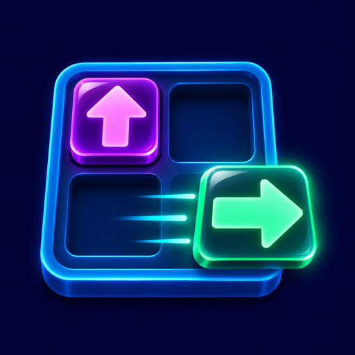

Arrow Tidy: Arrow Puzzle
Arrow Tidy는 화살표를 막히지 않는 순서로 탭해 보드를 비우는 Android 퍼즐 게임입니다.
게임 방법
- 화살표를 탭하면 가리키는 방향으로 움직입니다.
- 길이 열려 있으면 보드 밖으로 빠지고, 막혀 있으면 하트를 하나 잃습니다.
- 모든 화살표를 내보내면 클리어입니다.
주요 기능
- 초급·중급·고급 150레벨과 오늘의 퍼즐
- 힌트와 되돌리기, 스킨 5종
- 타임어택: 새로 나오는 10문제를 이어 풀고 총시간을 겨룹니다.
- 온라인 순위를 빼면 인터넷 연결 없이 플레이할 수 있습니다.
Google Play 게임 로그인
Google Play 게임 로그인은 타임어택 온라인 순위에 사용합니다. 클리어 후 순위 등록을 선택하면 기록을 Google Play 게임 리더보드에 보내고 내 순위를 보여 줍니다. Play 게임 SDK는 앱을 실행할 때 자동 로그인을 시도할 수 있습니다. 로그인하지 않아도 퍼즐을 즐길 수 있습니다. 자세한 내용은 개인정보처리방침을 확인해 주세요.
광고와 문의
이 앱에는 광고가 포함됩니다. 하트나 힌트를 더 받으려고 광고를 볼지는 이용자가 선택합니다. 화면 사이에 전면 광고가 나올 수 있습니다. 문의는 Google Play의 Arrow Tidy 스토어 페이지에 표시된 개발자 연락처로 보내 주세요.
About Arrow Tidy
Arrow Tidy is a puzzle game for Android. Tap the arrows in an order that never gets them stuck, and clear the board.
- 150 levels across Beginner, Intermediate and Advanced, plus a Daily Challenge
- Hints, Undo and 5 skins
- Time Attack: solve 10 new puzzles in a row and compete for the best total time
- Playable offline, except for online rankings
Google Play Games sign-in
Google Play Games sign-in is used for Time Attack online rankings. If you choose to submit your time after clearing a run, it is sent to a Google Play Games leaderboard and your rank is shown. The Play Games SDK may try to sign you in automatically when the app starts. You can play puzzles without signing in. See the Privacy Policy.
Ads and contact
This app contains ads. Watching an ad to get more hearts or hints is your choice. Full-screen ads may also appear between screens. To contact the developer, use the contact listed on the Arrow Tidy store listing on Google Play.